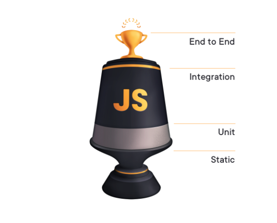

class: center, middle <h1 style="margin:0;">Introduction to Testing</h1> <h3 style="">and exploring automation</h3> <img src="https://media.giphy.com/media/3orieKKmYyvUdR3RkY/giphy.gif" alt="testing-microphone" width="35%"> --- class: center, middle <h3 class="center">What is testing?</h3> <img src="https://media.giphy.com/media/avPzMKapzB8D6/giphy.gif" alt="ralph-wiggum-flute"> <p style="color:white;">dsfasfd</p> --- class: center, middle <h3 class="center">What is testing?</h3> <img src="https://media.giphy.com/media/avPzMKapzB8D6/giphy.gif" alt="ralph-wiggum-flute"> <p>Methodologies to have assurance that an application behaves the way it is expected to .</p> --- class: center, middle <h3 class="center">Different kinds of testing</h3> <div class="flex-center"> <ul class="text-left"> <li>Manual test</li> <li>Unit test</li> <li>Integration test</li> <li>End to end test</li> </ul> </div> --- class: center, middle <h3>Unit Test</h3> <p style="padding: 0 100px 0 100px;"><i>Testing an individual component/unit.</i></p> --- class: center, middle <h3>Integration Test</h3> <p style="padding: 0 100px 0 100px;"><i>Testing how the a group of components work together.</i></p> --- class: center, middle <h3>End to end Testing</h3> <img src="https://media.giphy.com/media/I7kkegrRyNrk4/source.gif" alt=""> <p style="padding: 0 100px 0 100px;"><i>Test the application as a user would through automation.</i></p> --- class: center, middle <h3>Don't get carried away</h3> <p style="padding: 0 100px 0 100px;"><i>Are you aiming for 100% test coverage? Are you frequently having to update or refactor your test?</i></p> --- class: center, middle <h3>The Testing Trophy!</h3>  --- class: center, middle <p style="padding: 0 100px 0 100px;"><i>Sorry it's not an award given for writing great tests or sumtin.</i></p> <p><i>Just a "food pyramid" for testing.</i></p> --- class: center, middle <h3>Let's explore end to end testing with:</h3> --- class: center, middle <h3>Recap</h3> <div class="flex-center"> <ul class="text-left"> <li>Manual test</li> <li>Unit test</li> <li>Integration test</li> <li>End to end test</li> </ul> </div>